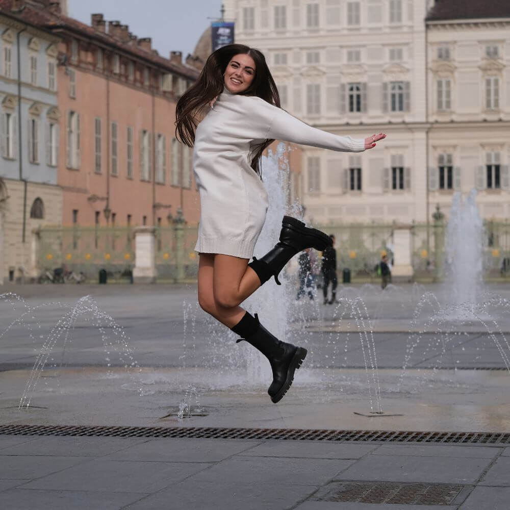
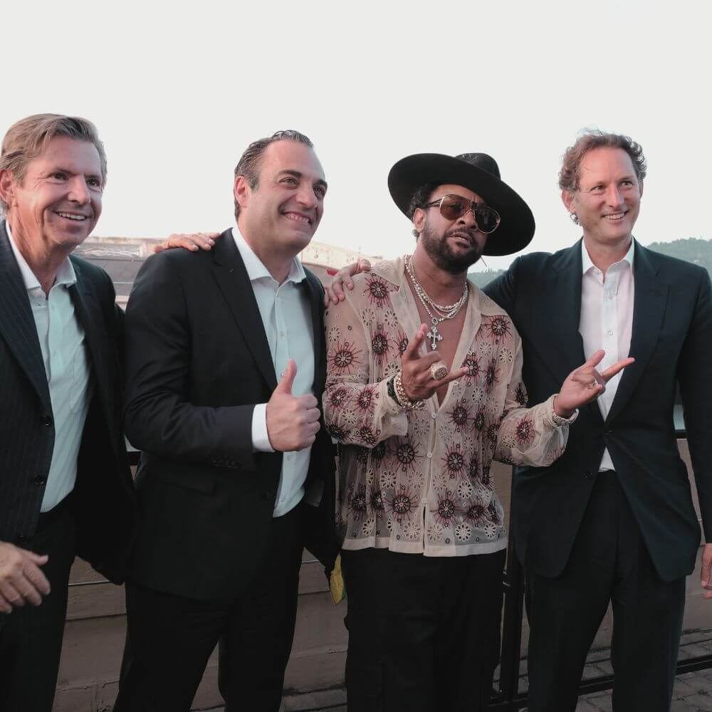
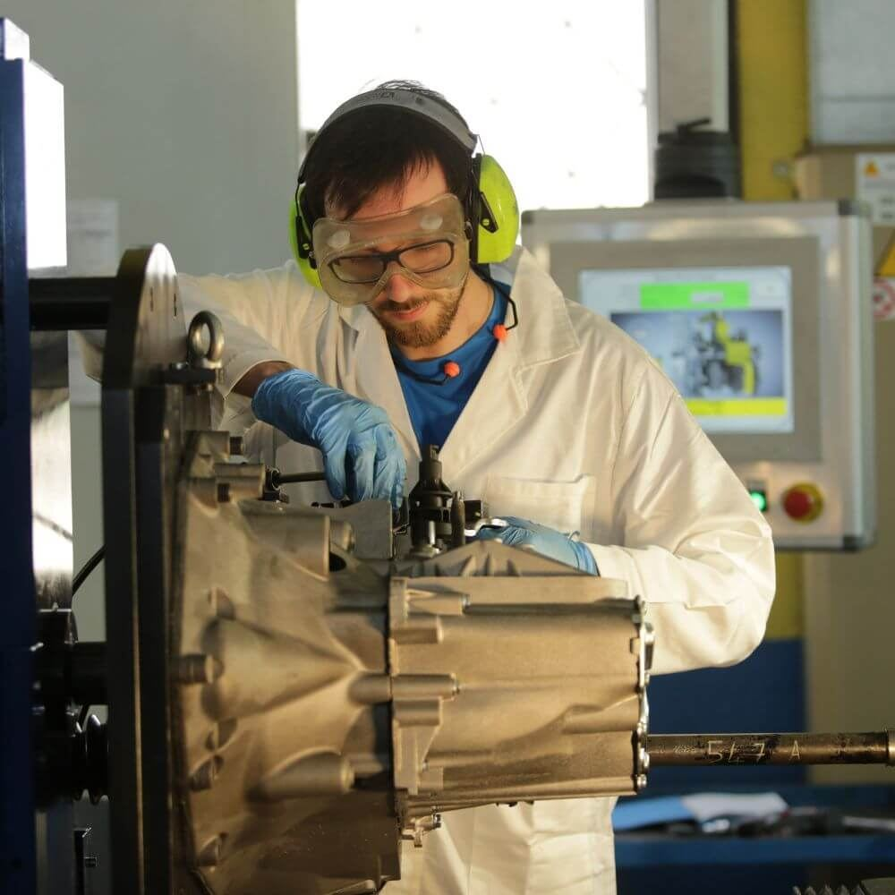
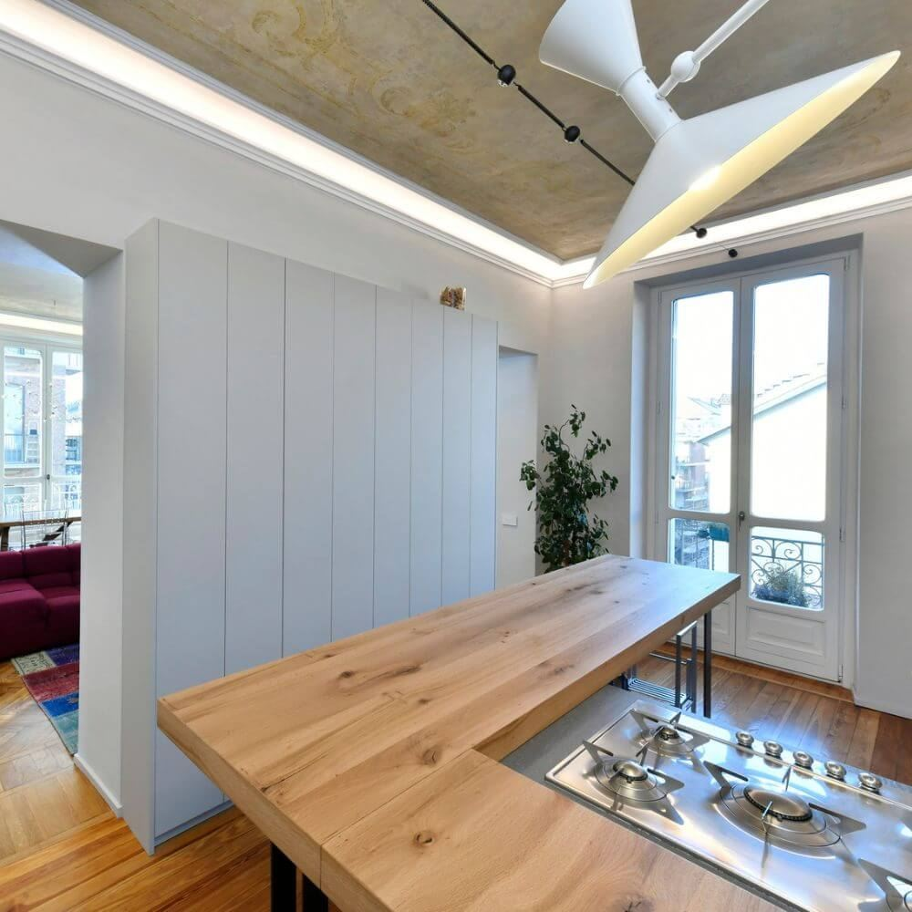
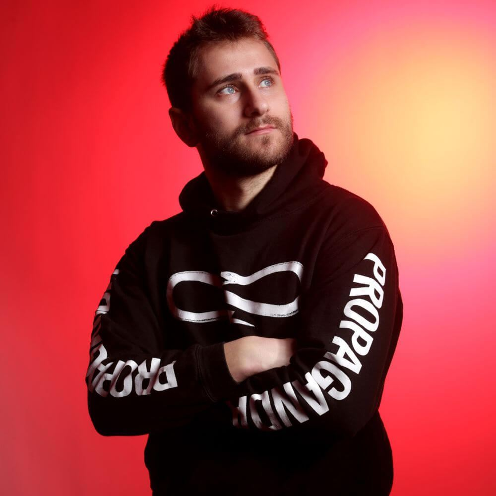
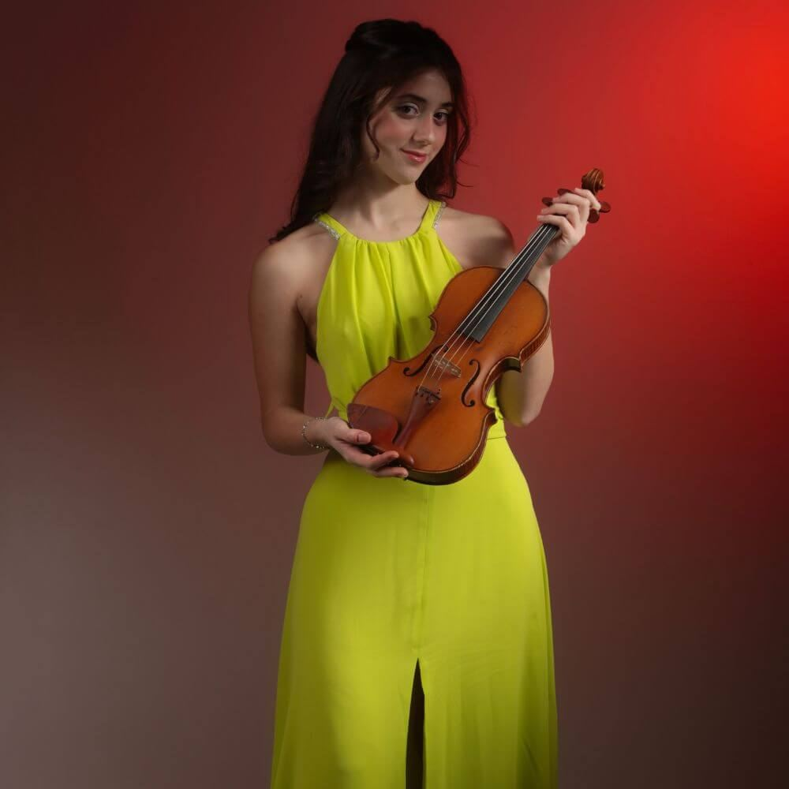
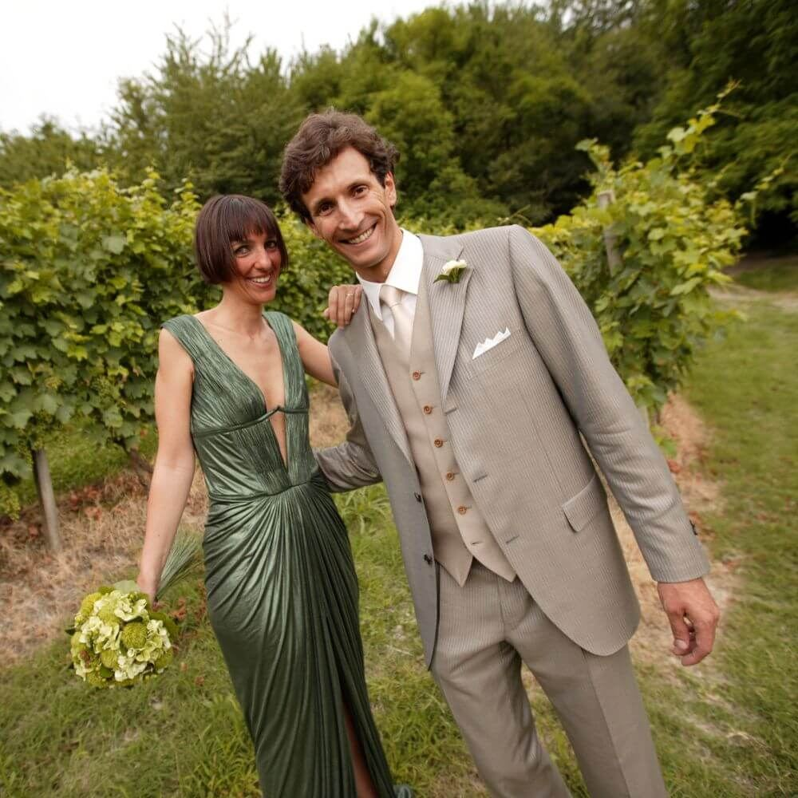
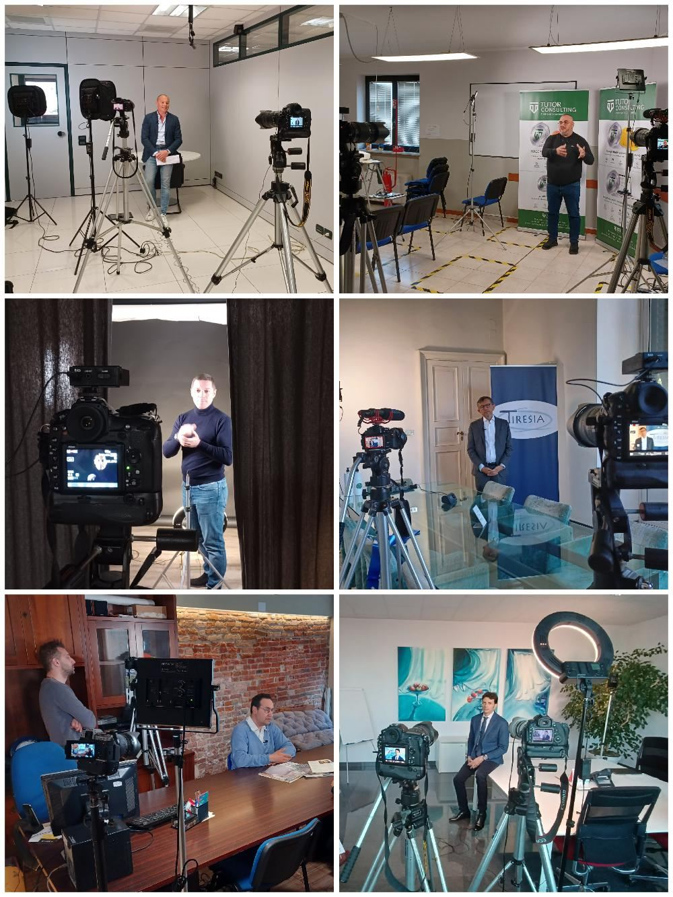

Aziende
Corporate e personal branding
Ritratti aziendali coerenti per tutto il team, pensati per il sito, LinkedIn e la comunicazione del brand.

Ritratti, famiglia, corporate, congressi, moda, industriale, spazi e video. Un metodo solo, due pubblici diversi: privati e aziende.
Con i privati parliamo di emozioni, ricordi e atmosfere. Con le aziende entriamo nel merito di obiettivi, immagine e posizionamento.
Un ritratto, un servizio di famiglia, un compleanno o un matrimonio. Lavoriamo molto sull'empatia, creando un ambiente rilassato e accogliente, e vi accompagniamo con consigli su abbigliamento, palette colori e mood della sessione.
Corporate, congressi, prodotto, industriale, spazi e video. Pianifichiamo nel dettaglio tempistiche, logistica, tipo di contenuti e utilizzo finale delle immagini. Sappiamo quando intervenire e quando restare invisibili.
La domanda che guida il lavoro e sempre la stessa: come possiamo esservi davvero utili?
Quando ci scrivete o ci chiamate non rispondiamo mai in modo standard. Capiamo chi abbiamo davanti e quale risultato vuole ottenere.
Prima di accendere le luci o di uscire in esterna, indicazioni personalizzate: mood e abbigliamento per i privati, logistica e contenuti per le aziende.
L'obiettivo non e solo ottenere immagini efficaci, ma rendere tutto il processo fluido e naturale. Empatia con i privati, precisione con i professionali.
Per un privato e un ricordo da custodire, per un'azienda uno strumento di lavoro. In entrambi i casi selezione facile e file ordinati.
Il lavoro non finisce con l'invio dei file. Un messaggio, un confronto, un feedback: e cosi che nascono le collaborazioni che durano.
Ogni servizio nasce da uno studio accurato di luci, pose e inquadrature, e finisce in post produzione curata.
Ritratti aziendali coerenti per tutto il team, pensati per il sito, LinkedIn e la comunicazione del brand.

Ogni evento e fatto di attimi irripetibili. Approccio discreto, rispetto dei tempi del brand, racconto visivo curato dalla ripresa alla post.

Fotografia che rende visibile il marchio: prodotti, processi e reparti raccontati con una narrazione visiva forte ed efficace.

Architettura, interni, strutture ricettive e case vacanza. Immagini che valorizzano lo spazio e funzionano su portali e cataloghi.

Ogni volto ha una storia. Ritratti che vanno oltre l'immagine, mettendo in luce espressione, personalita e unicita del soggetto.

Con brand, stilisti e modelli, per cataloghi, editoriali, lookbook e campagne. Luci e inquadrature studiate per tessuti, linee e accessori.

Cerimonie, ricorrenze e servizi di famiglia. Un ambiente rilassato e accogliente, e fotografie che restano da appendere e da stampare.

Video aziendali, video prodotto e in particolare video interviste, pensati per rafforzare il branding e aumentare la riconoscibilita.
Osserviamo molto e ci adattiamo. C'e chi ha bisogno di essere guidato e chi desidera massima autonomia, chi cerca spontaneita e chi ha bisogno di rigore e coerenza visiva. Il compito di un buon fotografo e interpretare tutto questo.
Servizi in tutto il Piemonte, da Cuneo ad Asti, da Biella ad Alessandria fino a Novara e Vercelli. Quando il progetto lo richiede, anche in Valle d'Aosta e in Liguria.
Estratti dalle recensioni gia pubblicate sul sito. In una versione pubblicata si aggiornano da sole.
Ha un talento unico nel mettere a proprio agio i ragazzi di questa eta. Le foto sono originali e catturano la personalita di mio figlio senza mai sembrare forzate.
Barbara CappiAvevo esigenze ben precise e sono rimasto pienamente soddisfatto. Dopo il servizio mi ha supportato nell'adattamento dei contenuti per i diversi canali.
Edoardo BustiMolto professionale ma anche attento alla persona. Ha capito che tipo di immagine volevo trasmettere: foto naturali, pulite e perfette per un uso professionale.
Enrico MauroRaccontateci cosa vi serve. Possiamo aiutarvi a trovare la soluzione piu adatta, preparare un preventivo personalizzato e costruire un progetto che rispecchi davvero le vostre esigenze.
Via Oropa 54B, Torino. Quartiere Vanchiglietta, a breve distanza da Corso Belgio e Corso Casale
{kind=link}
{kind=link}
{kind=link}
{kind=link}
{kind=link}
{kind=link}
{kind=link}
{kind=link}
{kind=link}
{kind=link}
{kind=link}
{kind=link}
{kind=link}
{kind=link}
{kind=link}
{kind=link}
{kind=link}
{kind=link}
{kind=link}
{kind=link}
{kind=link}
{kind=link}
{kind=link}
{kind=link}